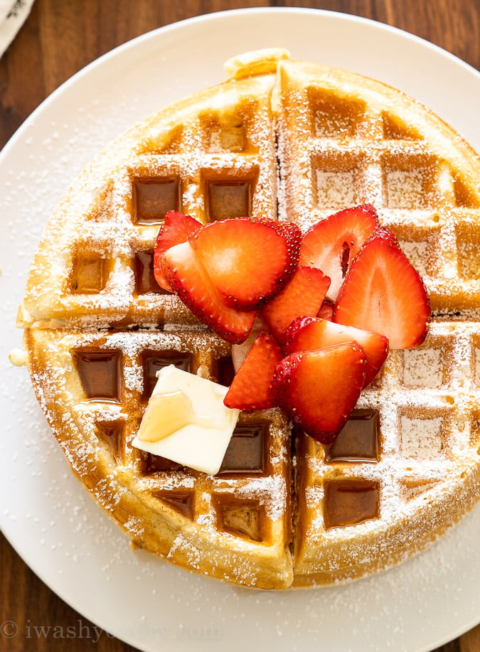

Waffle Recipe

Description:
If you're craving Waffle House waffles try this easy copycat recipe - you won't taste the difference. Serve with maple syrup, butter, and chocolate chips.
Ingredients:
- 1 1/2 cups flour
- 2 tablespoons cornstarch
- 1 teaspoon salt
- 1/2 teaspoon baking powder
- 1/2 teaspoon baking soda
- 1 large egg
- 1/4 cup sugar
- 1/4 cup salted butter, softened, plus more for serving
- 1 cup half-and-half
- 1/2 cup buttermilk
- cooking spray
- pure maple syrup, and/or chocolate chips, for serving
Steps:
1. Whisk together flour, cornstarch, salt, baking powder, and baking soda in a bowl.
2. Whisk together egg, sugar, butter, and vanilla in a separate large bowl until mixture is smooth. Whisk in half-and-half and buttermilk. Add flour mixture; stir until just combined and a few lumps remain. (Do not overmix.) Chill, covered, at least 1 hour or up to overnight.
3. Preheat waffle iron to medium-high; lightly coat with cooking spray. Pour about 2/3 cup batter onto waffle iron. Cook until golden and crisp on edges, 4 to 6 minutes. Transfer to a plate; keep warm. Repeat with remaining batter.
4. Serve waffles with maple syrup, chocolate chips, and/or additional butter.